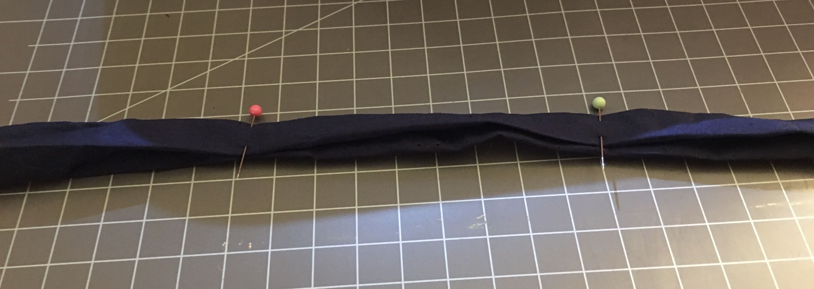
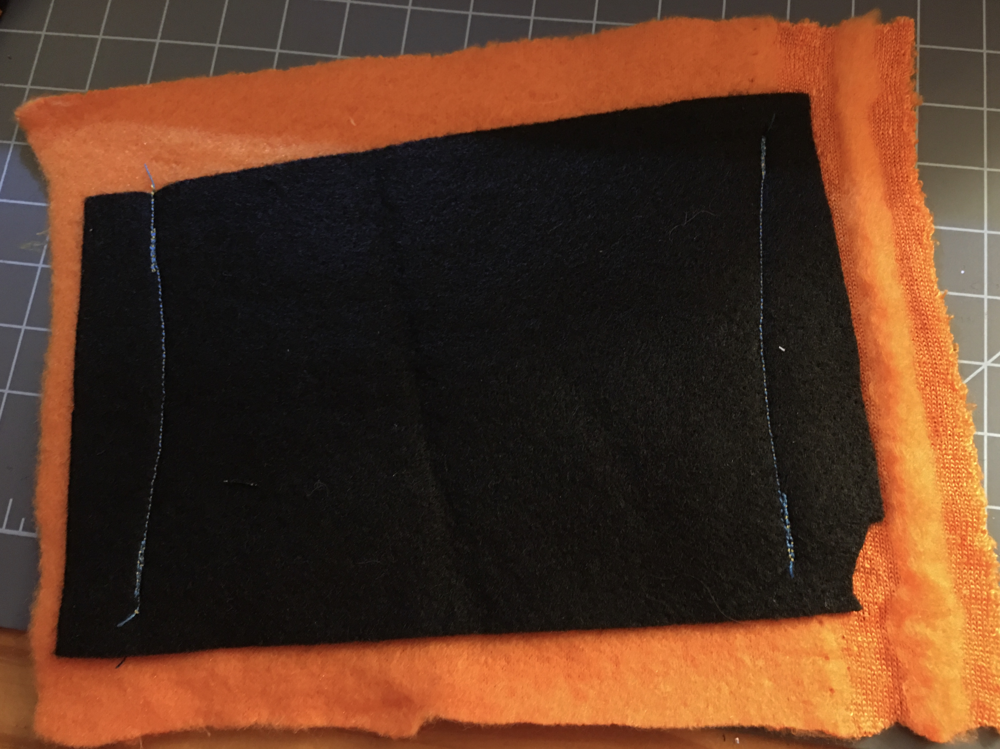
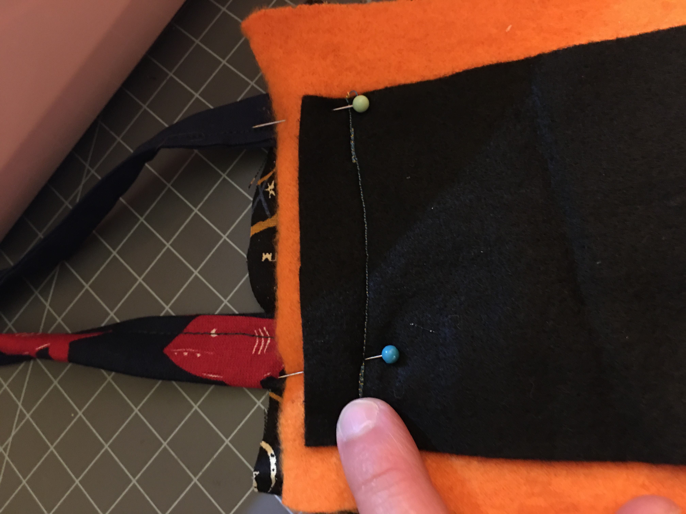
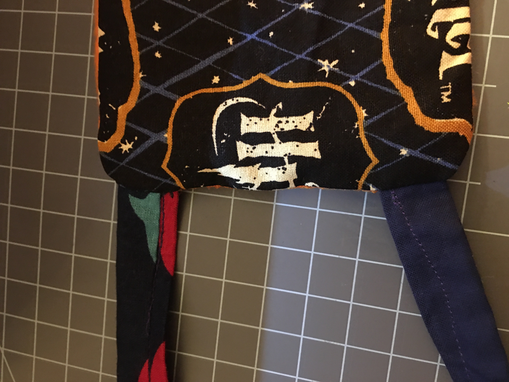

Hey y’all, what’s up? Monkey Momma here. Well, it’s day… I don’t even know anymore, of the Corona Virus shelter in place/quarantine/stay home orders. Phidget_Kitty had spring break last week, which was a nice break from spending all day trying to get her to do schoolwork. I am finding that some of her issue is her just being a pre-teen and not wanting to do any work on topics that do not interest her. For instance, today’s English lesson was reading part of Charles Perrault’s Cinderella and answering some questions about it. Cinderella is her least favorite Disney Princess. She does not care for fairy tales where a girl’s problems are solved because a man stepped in. She prefers stories like Mulan, Brave, and anime stories. She was irritable the whole time she was working on the assignment because she simply is not interested in reading about things she does not like, even for school. This has made her homeschooling a bit more difficult, but we’re making it work.
A few days ago, the CDC and state announced people need to wear cloth masks when they go out in public. There are no masks available for purchase, like anywhere, so I decided to use some of my fabric scraps to make a couple for if we need to leave the house at all. Phidget_Kitty and HvyD have big scarf things they have been using, but I needed something. The masks turned out fairly decent, made with just the scraps I had at home and not even really measuring anything, so I decided to make a tutorial on them, in case anyone else needs to make masks really quick. These are in NO WAY medical grade, but they will at least help keep you from shedding germs onto others if you have the ‘Rona and don’t know it.
MATERIALS (for one mask)
- Four 2 inch by about 18 inch fabric strips. Again, I just eyeballed everything, but you can use more precise measurements if you want.
- Felt about 4 inch by 5 inch. Make sure you can breathe through it! Some felt may be too thick.
- Soft fabric for face side about 6 inch by 7 inch. I used fleece since the fibro makes my skin hurt when stuff touches it. Use whatever is comfortable for you, that you can breathe through.
- Outer fabric about 6 inch by 7 inch. You can use pretty much whatever cotton you want.
Putting it together
- Fold the long strips in half, then fold each side into the half, tucking into the fabric. Make sure all the rough-cut edges are folded in, so the edges are smooth. Pin this in place.
- Tuck the end of one side of each strip in, to give it a finished side and pin.
- Do this with all four fabric strips.
- Sew along the open end of each strip and along the folded in end to hold the straps together. I just used a simple straight stitch along the open side. You can do this with a machine or by hand.
- Center the felt piece on the “wrong” (rougher side) of the inner fabric and sew along the sides. This is just to hold the felt in place so it won’t slide around in the mask.
- Make a fabric stack with the patterned fabric with patterned side up, your straps (make sure they are about ½ inch from edge so they do not get sewn into top and bottom seams, and lined up with the edge you will sew in next step), and your soft fabric on top, with the felt up. Pin the stack together, making sure to pin the straps in place.
- Sew along the top, bottom and the edge the straps are pinned to.
- Turn the stack inside out. The straps should be attached to one side.
- Fold the side that is still open in and pin the other two straps in place at the edges of the mask, inside the “pocket”.
- Sew along the open edge, sewing the straps into the mask.
- If desired, sew a line along the other side to make both sides of the mask look uniform.
- You can now use this simple face mask. Tie the bottom straps near your neck, and the top toward the top of the back of your head. I put the bottom straps under my braid and the top above.
So, I hope this helps those of you who have some extra fabric laying around and can’t find masks get something that you can leave the house in. As with any fabric mask, this probably won’t protect YOU from viruses and germs, but it will help keep you from spreading the virus to others. The CDC says this is better than nothing, since it has become nearly impossible to find any commercial masks.

I hope y’all are staying healthy. Keep on eye on your mental health, this isolation can be hard on people, especially those of y’all who are normally social people. Check out my Instagram and YouTube for more of the art I have been working on during this lock down.